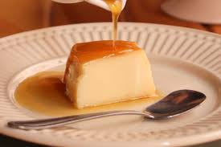

Páginas de receitas
Bolo de Cenoura - Bolo de Laranja - Bolo de Milho - Pudim de Leite Condensado
Pudim de Leite Condensado

Ingredientes
Pudim
- 1 lata de leite condensado
- 2 medidas de leite
- 3 ovos
Calda
- 1 xícara de açúcar
- 1/2 xícara de água
Modo de preparo
- Para a calda, coloque o açúcar em uma panela e leve ao fogo baixo até derreter e ficar dourado.
- Acrescente a água com cuidado e mexa até formar uma calda lisa.
- Despeje a calda em uma forma própria para pudim e espalhe bem.
- No liquidificador, bata o leite condensado, o leite e os ovos até ficar homogêneo.
- Despeje a mistura na forma caramelizada.
- Cubra com papel-alumínio e leve ao forno em banho-maria a 180°C por aproximadamente 1 hora.
- Deixe esfriar, leve à geladeira por pelo menos 4 horas e depois desenforme.